항공산업기사 (2009-05-10 기출문제)
1과목: 항공역학
1. 헬리콥터 회전날개의 각 요소를 결정하는 것에 대한 설명으로 틀린 것은?
- 진동을 줄이기 위해서는 깃의 수는 많아야 한다.
- 깃의 면적은 고속에서의 기동성을 위해서는 작아야 한다.
- 회전날개 지름은 좋은 정지비행성능을 위해서는 커야 한다.
- 전진 비행시 작은 진동과 균일한 깃 하중을 위해서는 깃 비틀림 각은 작아야 한다.
(정답률: 52%)

2. 비행기가 날개를 내리거나 올려 비행기의 전후축 (세로축: Longitudinal axis)을 중심으로 움직이는 것과 관련된 모멘트는?
- 옆놀이 모멘트(Rolling moment)
- 빗놀이 모멘트(Yawing moment)
- 키놀이 모멘트(Pitching moment)
- 방향 모멘트(Directional moment)
(정답률: 87%)
3. 압축성 유체의 연속방정식 ρ1A1V1=ρ2A2V 에 대한 설명중 틀린 것은? (단, ρ: 유체의 밀도, V : 유체의 속도, A : 단면적이다.)
- ρ1=ρ2이라면 비압축성 유체이다.
- 에너지 보존법칙으로부터 유도된다.
- ρAV = 일정 이라고도 표현할 수 있다.
- 단면적과 속도가 반비례함을 알 수 있다.
(정답률: 69%)
4. 헬리콥터 날개의 후류가 지면에 영향을 줌으로써 회전면 아래의 압력이 증가되어 양력의 증가를 일으키는 현상은?
- 위빙효과
- 랜드업효과
- 지면효과
- 자동회전효과
(정답률: 95%)
5. 다음 중 항공기 날개의 절대 받음각(Absoluteangle of attack)을 옳게 설명한 것은?
- 항공기 동체기준선과 무양력시위선이 이루는 각
- 날개의 평균 캠버선과 시위선이 이루는 각
- 항공기 진행방향과 평균 캠버선이 이루는 각
- 항공기의 진행방향과 무양력시위선이 이루는 각
(정답률: 65%)
6. 프로펠러의 이상적인 효율을 비행속도(V)와 프로펠러를 통과할 때 순수 유도속도로 옳게 표현한 것은?
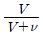
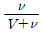
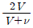
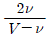
(정답률: 68%)
7. 다음 중 프로펠러 효율에 대한 설명으로 틀린 것은?
- 추력에 비례한다.
- 비행속도에 비례한다.
- 진행율에 반비례한다.
- 축동력에 반비례한다.
(정답률: 74%)
8. 항공기의 무게가 6ton, 날개면적이 30m2 인 제트기가 해발고도를 950km/h 로 수평 비행하고 있을 때 추력은 몇 kgf 인가? (단, 양항비는 6 이다.)
- 1000
- 6000
- 7500
- 7800
(정답률: 60%)
9. 조종력 경감장치 중 밸런스 역할을 하는 조종면을 그림과 같이 플랩의 일부분에 집중시키는 공력평형장치의 명칭은?
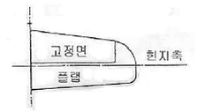
- 혼 밸런스
- 앞전 밸런스
- 내부 밸런스
- 프리즈 밸런스
(정답률: 73%)
10. 프로펠러 진행율(Advance ratio)의 단위로 옳은 것은?
- m
- m/s
- rps
- 무차원
(정답률: 70%)
11. 이륙시 활주거리를 짧게 하기 위한 방법으로 가장 옳은 것은?
- 실속속도를 크게 하도록 플랩의 작동을 멈춘다.
- 가속력을 크게 하기 위하여 최대 추력을 낸다.
- 항력을 증가시키기 위하여 양항비를 높인다.
- 실속 속도를 증가시키기 위하여 양항비를 높인다.
(정답률: 83%)
12. 조종면에 발생되는 힌지 모멘트에 대한 설명으로 옳은 것은?
- 조종면의 폭이 클수록 작다.
- 조종면의 평균 시위가 클수록 작다.
- 비행기 속도가 빠를수록 크다.
- 조종면 주위 유체의 밀도가 작을수록 크다.
(정답률: 79%)
13. 항공기가 선회할 때 관계되는 축을 모두 짝지은 것은?
- 세로축
- 수직축
- 세로축 및 수직축
- 수직축과 가로축
(정답률: 73%)
14. 항공기 날개에 상반각을 주게 되면 미치는 영향으로 가장 옳은 것은?
- 유도저항을 적게 하고 방향 안정성을 좋게 한다.
- 옆미끄럼을 방지하고 가로 안정성을 좋게 한다.
- 익단 실속을 방지하나 세로 안정성을 해친다.
- 선회성능을 향상시키나 가로 안정성을 해친다.
(정답률: 88%)
15. 날개의 최대 양력계수를 증가시키는 요소가 아닌 것은?
- 캠버
- 시위길이
- 스포일러
- 날개면적
(정답률: 86%)
16. 자동 회전과 수직 강하가 조합된 비행으로 조종간을 잡아 당겨서 실속시킨 후, 방향키 페달을 한쪽만 밟아 주는 조종동작으로 발생되는 비행은?
- 스핀비행
- 스톨비행
- 선회비행
- 슬립비행
(정답률: 87%)
17. 항공기의 양항비가 10 인 상태로 고도 500m에서 활공을 한다면 수평 활공 거리는 몇 m 인가?
- 500
- 2500
- 5000
- 10000
(정답률: 94%)
18. 다음 중 2차원 날개와 비교하여 3차원 날개의 이론을 고려하면서 장착한 것은?
- 플랩
- 윙렛
- 슬롯
- 패널
(정답률: 75%)
19. 제트 비행기가 290m/s 의 속도로 비행할 때 Mach 수는 약 얼마인가? (단, 기온 : 20℃, 기체상수 : 287m2/(s2ㆍK) , 비열비 : 1.4이다.)
- 0.787
- 0.845
- 0.894
- 0.926
(정답률: 60%)
20. 비행기의 무게가 2000kgf 이고 경사각이 40˚, 150km/h 의 속도로 정상선회하고 있을 때 선회 반지름은 약 몇 m 인가?
- 200
- 211
- 231
- 276
(정답률: 64%)
2과목: 항공기관
21. 왕복기관 시동시 스로틀(Throttle)밸브가 정상작동 할 때보다 적게 열린다면 발생되는 현상으로 옳은 것은?
- 역화
- 농후혼합비
- 조기점화
- 희박혼합비
(정답률: 65%)
22. 다음 중 가스터빈기관의 트림(trim)작업시 조절하는 것이 아닌 것은?
- 연료제어장치(FCU)
- 터빈블레이드 각도
- 가변정익베인(VSV)
- 사용 연료의 비중
(정답률: 55%)
23. 다음 중 가스터빈기관에서 축류 압축기의 실속이 발생하는 경우가 아닌 것은?
- 흡입구로 들어오는 난류나 분열된 흐름 때문에 속도벡터를 감소시켜 받음각이 커지는 경우
- 갑작스런 기관 가속으로 인한 과다한 연료흐름 때문에 연소실의 역압력이 커져서 속도벡터를 감소시켜 받음각이 커지는 경우
- 갑작스런 감속에 의한 희박한 혼합비 때문에 연소실의 역압력이 감소되어 속도벡터를 증가시켜 받음각이 작아지는 경우
- 가변 스테이터가 설치된 압축기의 회전속도가 일정하게 유지되는 경우
(정답률: 81%)
24. 터빈 기관에서 과열시동(hot start)을 방지하기 위하여 확인하여야 하는 계기는?
- 토크 미터
- EGT 지시계
- 출력 지시계
- RPM 지시계
(정답률: 88%)
25. 9개 실린더를 갖고 있는 성형기관(Radial engine)의 마그네토 배전기(Distributor) 6번 전극에 꽂혀있는 점화 케이블은 몇 번 실린더에 연결시켜야 하는가?
- 2
- 4
- 6
- 8
(정답률: 75%)
26. 가역과정의 1사이클을 하는 열역학적 시스템에 대하여 열역학 제1법칙과 가장 관계가 먼 식은? (단, Qcycle : 열에 의한 1사이클 동안의 순에너지 전달량, Wcycle : 일에 의한 1사이클 동안의 순에너지 전달량, △Ecycle : 시스템의 에너지 변화량이다.)
- Wcycle = 0
- Qcycle = Wcycle
- △Ecycle = 0
- △Ecycle = Qcycle - Wcycle
(정답률: 62%)
27. 다음 중 로커 아암의 부싱이나 베어링의 내경을 측정하는데 가장 적절한 측정 기기는?
- Deep Gage
- Thickness Gage
- Dial Gage
- Telescoping Gage
(정답률: 63%)
28. 4사이클 왕복기관의 제동마력[PS]을 구하는 식으로 옳은 것은? (단, P : 제동평균 유효압력[kgf/cm2], K : 실린더수, A: 피스톤 단면의 넓이[cm2], L :행정거리[m], N : 기관의 회전수[rpm] 이다.)
- PLANK/(75×60)
- PLANK/(75×2×60)
- PLANK/550
- PLANK/5500
(정답률: 85%)
29. 다음 중 터빈 깃의 내부를 중공으로 제작하여 차가운 공기가 지나가게 함으로써 터빈 깃을 냉각하는 방법은?
- 필름냉각(Film Cooling)
- 대류냉각(Convection Cooling)
- 충돌냉각(Impingement Cooling)
- 증발냉각(Transpiration Cooling)
(정답률: 90%)
30. 다음 중 가스터빈기관의 주요 구성품 3가지에 해당하지 않는 것은?
- 터빈(Turbine)
- 연소기(Combustor)
- 샤프트(Shaft)
- 압축기(Compressor)
(정답률: 92%)
31. 다음 중 가스터빈기관의 성능을 판정하기 위하여 공기유량(Wa)을 결정하는 보정식(Correction)으로 옳은 것은? (단, δ=P/(P0, θ=T/(T0, P=입구압력, T=입구온도, P0 와 T0 는 각각 표준대기의 압력과 온도이다.
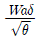
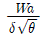
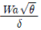
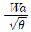
(정답률: 49%)
32. 다음 중 연료를 직접 분사하여 특별한 장치가 없이 압축열에 의한 자연착화를 시키는 압축 점화 방법의 기관은?
- 가스 기관
- 가솔린 기관
- 디젤 기관
- Hesselman 기관
(정답률: 74%)
33. 가스터빈기관에서 축류식 압축기의 단수를 n, 단당 압력비를 Ys할 때 이 압축기의 전체 압력비 Y를 구하는 식으로 옳은 것은?
- Y=n×Ys
- Y=nYs
- Y=n+Ys
- Y=(Ys)n
(정답률: 67%)
34. 왕복기관에서 흡입밸브가 상사점 이전 30°에서 열리고 하사점 이후 60°에서 닫히며, 배기밸브가 하사점 이전 60°에서 열리고 상사점 이후 15°에서 닫히는 경우 밸브오버랩(valve overlap)은 몇 도인가?
- 15°
- 45°
- 60°
- 75°
(정답률: 89%)
35. 다음 중 프로펠러 조속기의 파일롯(Pilot)밸브의 위치를 결정하는데 직접적인 영향을 주는 것은?
- 엔진오일 압력
- 조종사의 위치
- 펌프오일 압력
- 플라이 웨이트(fly weight)
(정답률: 84%)
36. 다음 중 비행 상태에 따라 프로펠러 회전 속도를 일정하게 유지하기 위하여 프로펠러 블레이드 루트각을 자동적으로 조절하는 정속 조절 장치는?
- 커프스(Cuffs)
- 스피너(Spinner)
- 가버너(Governor)
- 동조 장치(Synchro system)
(정답률: 77%)
37. 제트 기관류의 발명 순서를 시대 순으로 옳게 나열한 것은?
- 헤로의 에어리파일 → 중국 금나라의 로켓 →브랜카의 터빈장치 → 휘틀의 터보제트 기관
- 헤로의 에어리파일 → 중국 금나라의 로켓 →휘틀의 터보제트 기관 → 브랜카의 터빈장치
- 중국 금나라의 로켓 → 헤로의 에어리파일 →브랜카의 터빈장치 → 휘틀의 터보제트 기관
- 중국 금나라의 로켓 → 헤로의 에어리파일 →휘틀의 터보제트 기관 → 브랜카의 터빈장치
(정답률: 69%)
38. 부자식 기화기를 사용하는 왕복기관에서 연료는 어느 곳을 통과할 때 분무화되는가?
- 기화기 입구
- 연료펌프 출구
- 부자실(Float Chamber)
- 기화기 벤튜리(Carburetor Venturi)
(정답률: 82%)
39. 공기의 정압비열이 0.24kcal/kgㆍ℃ 라면 정적비열은 약 몇 kcal/kgㆍ℃인가? (단, 비열비는 1.4 이다.)
- 0.17
- 0.34
- 0.53
- 5.83
(정답률: 51%)
40. 다음 중 가스터빈기관의 효율이 높을수록 얻을 수 있는 장점이 아닌 것은?
- 연료 소비율이 작아진다.
- 활공거리를 길게 할 수 있다.
- 같은 적재연료에서 항속거리를 길게 할 수 있다.
- 필요한 적재 연료의 감소분만큼 유상하중을 증가시킬 수 있다.
(정답률: 61%)
3과목: 항공기체
41. 강(steel)의 표면만을 경화시키고 내부는 경화 전의 상태를 유지시켜 내마모성을 향상시키는 방법이 아닌 것은?
- 뜨임(Tempering)
- 침탄(Caburizing)
- 질화(Nitriding)
- 청화(Cyaniding)
(정답률: 56%)
42. 그림과 같이 지름 10cm 의 원형 강봉에 40kN 의 인장하중이 작용하는 경우, 축의 수직인 면에 발생하는 수직응력은 약 몇 kPa 인가?
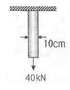
- 45⑤
- 5093
- 6025
- 7235
(정답률: 55%)
43. 항공기 위치 표시방법 중 비행기 수직 중심선에 평행하게 좌, 우측의 나비를 측정한 선은?
- 버톡선
- 동체 위치선
- 동체 수위선
- 날개 위치선
(정답률: 73%)
44. 항공기의 탭에 대한 설명으로 틀린 것은?
- 조종면의 균형을 향상시킨다.
- 일반적으로 뒷전에 설치되어 있다.
- 조종면을 대신하기 위한 장치이다.
- 조종면의 동작을 위한 조종력을 경감시킨다.
(정답률: 74%)
45. 바깥지름이 1cm 인 강(AISI 4340)으로 된 봉에 인장하중 10ton 이 작용할 때 이 봉의 인장강도에 대한 안전여유는 약 얼마인가? (단, AISI 4340 의 인장강도는 18000kg/cm2 이다.)
- 0.29
- 0.41
- 0.71
- 1.41
(정답률: 43%)
46. 항공기 중심을 계산하기 위한 기준선을 결정하는 방법으로 가장 옳은 것은?
- 기수에 위치하도록 정한다.
- 날개 시위선의 1/4 지점으로 정한다.
- 날개의 앞전에 위치하도록 정한다.
- 계산 편의에 따라 기준으로 하는 것의 위치에 따라 다르게 결정한다.
(정답률: 67%)
47. 다음 중 항공기 비파괴검사에 해당하지 않는 것은?
- 육안검사
- 수중침전검사
- 보어스코프검사
- 형광침투탐상검사
(정답률: 86%)
48. 둥근막대의 단위 체적당 비틀림 변형에너지를 나타낸 것으로 옳은 것은? (단, r 는 전단응력, G는 가로탄성계수이다.)
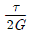
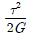
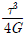
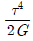
(정답률: 69%)
49. 그림과 같은 판재 가공을 위한 레이아웃에서 세트백을 나타낸 것은?
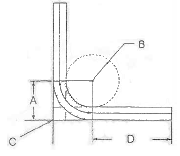
- A
- B
- C
- D
(정답률: 59%)
50. 샌드위치구조의 특징에 대한 설명으로 틀린 것은?
- 습기와 열에 강하다.
- 기존의 보강재보다 중량당 강도가 크다.
- 같은 강성을 갖는 다른 구조보다 무게가 적다.
- Control Surface나 Trailing Edge 등에 사용된다.
(정답률: 83%)
51. 중심축을 중심으로 대칭인 일정한 직사각형 단면으로 이루어진 보에 하중이 작용하고 있다. 이 때 보의 수직응력 중 최대인장 및 압축응력을 나타낸 것으로 옳은 것은? (단, M : 굽힘모멘트, I : 단면의 관성 모멘트, c : 중립축으로부터 양과 음의 방향으로 맨끝요소까지의 거리이다.)
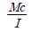
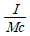
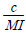
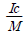
(정답률: 71%)
52. 항공기 조종계통은 대기온도 변화에 따라 케이블의 장력이 변한다. 이것을 방지하기 위하여 온도 변화에 관계없이 자동적으로 항상 일정한 케이블의 장력을 유지하는 역할을 하는 장치는?
- 턴 버클(Turn buckle)
- 푸시 풀 로드(Push pull rod)
- 케이블 장력계(Cable tension meter)
- 케이블 장력 조절기(Cable tension regulator)
(정답률: 79%)
53. 구리 도선을 통해서 저전압의 고전류를 용접할 금속에 흘려 보냄으로서 금속을 용해시켜 접합하는 것으로 버트, 스폿, 시임방법 등이 있는 용접법은?
- 가스 용접
- 전기아크 용접
- 전기저항 용접
- 피복아크 용접
(정답률: 45%)
54. 그림과 같은 표시는 어떤 볼트를 나타내는 것인가?
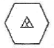
- 내식성 볼트
- 스탠다드 스틸볼트
- 정밀공차 볼트
- 알루미늄 합금 볼트
(정답률: 86%)
55. 어떤 온도에서 일정한 응력이 가해질 때 시간에 따라 계속적으로 변형율이 증가하게 되는데 이와 같이 시간에 따라 변형량을 측정하는 시험을 무엇이라 하는가?
- 피로(Fatigue)시험
- 크리프(Creep)시험
- 탄성(Elasticity)시험
- 천이점(Transition point)시험
(정답률: 88%)
56. 항공기 기체 구조 중 알루미늄 합금 2024 가 주로 사용되는 곳은?
- 동체 스킨
- 동체 프레임
- 랜딩기어
- 날개 윗면판
(정답률: 71%)
57. 페일 세이프 구조 중 백업구조(Back-up Structure)에 대한 설명으로 옳은 것은?
- 단단한 보강재를 대어 해당량 이상의 하중을 이보강재가 분담하는 구조이다.
- 많은 부재로 되어 있고 각각의 부재는 하중을 고르게 분담하도록 되어 있는 구조이다.
- 하나의 큰 부재를 사용하는 대신 2개 이상의 작은 부재를 결합하여 1개의 부재와 같은 또는 그 이상의 강도를 지닌 구조이다.
- 규정된 하중은 모두 좌측 부재에서 담당하고 우측 부재는 예비 부재로 좌측 부재가 파괴된 후 그 부재를 대신하여 전체하중을 담당한다.
(정답률: 77%)
58. 항공기에 일반적으로 많이 사용하는 리벳 중 순수 알루미늄(99.45%)으로 구성된 리벳은?
- 1100
- 2017-T
- 5⑤6
- 2117-T
(정답률: 81%)
59. 다음 그림은 완충장치의 완충곡선을 나타낸 것이다. 이 완충장치의 효율은 몇 % 인가?
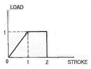
- 90
- 80
- 75
- 50
(정답률: 75%)
60. 코터 핀의 장착 및 떼어낼 때의 주의사항으로 틀린 것은?
- 한번 사용한 것은 재사용하지 않는다.
- 핀 끝을 구부릴 때는 꼬거나 가로방향으로 구부린다.
- 부근의 구조를 손상시키지 않도록 플라스틱 해머를 사용한다.
- 핀 끝을 절단할 때는 안전사고를 방지하기 위해 핀축에 직각으로 절단해야 한다.
(정답률: 76%)
4과목: 항공장비
61. 다음 중 지자기의 3요소가 아닌 것은?
- 복각(Dip)
- 편차(Variation)
- 수직분력(Vertical component)
- 수평분력(Horizontal component)
(정답률: 68%)
62. 모든 부품을 항공기 구조에 전기적으로 연결하는 방법으로 고전압 정전기의 방전을 도와 스파크 현상을 방지시키는 역할을 하는 것을 무엇이라 하는가?
- 공전(Static)
- 접지(Earth)
- 본딩(Bonding)
- 절제(Temperance)
(정답률: 80%)
63. 소화기로 사용되는 질소에 대한 설명으로 틀린 것은?
- 중량이 비교적 무겁다.
- 불황성가스로 독성이 낮다.
- 밀폐된 장소에 사용하면 위험성이 있다.
- 질소를 액화하여 저장하는데 -30℃만 유지하면 되기 때문에 모든 항공기에서 사용한다.
(정답률: 79%)
64. 미리 설정된 정격값 이상의 전류가 흐르면 회로를 차단하는 것으로 재사용이 가능한 회로보호 장치는?
- 퓨즈(Fuse)
- 릴레이(Relay)
- 서킷 브레이커(Circuit braker)
- 서큘라 커넥터(Circular connector)
(정답률: 75%)
65. 다음 중 납산 축전지 캡(Cap)의 용도가 아닌 것은?
- 외부와 내부의 전선연결
- 전해액의 보충, 비중측정
- 충전시 발생되는 가스배출
- 배면 비행시 전해액의 누설방지
(정답률: 71%)
66. 다음 중 항공기의 기관계기만으로 짝지어진 것은?
- 회전속도계, 연료유량계, 마하계
- 회전속도계, 연료압력계, 승강계
- 대기속도계, 승강계, 대기온도계
- 연료유량계, 연료압력계, 회전속도계
(정답률: 77%)
67. 항공기 유압계통에 사용되는 유체의 힘 전달 방식에 대한 원리는?
- 뉴톤의 원리
- 파스칼의 원리
- 작용 및 반작용의 원리
- 베르누이의 정리
(정답률: 71%)
68. 제빙부츠를 취급할 때에 주의해야 할 사항으로 틀린 것은?
- 부츠 위에서 연료 호스(Hose)를 끌지 않는다.
- 부츠 위에 공구나 정비에 필요한 공구를 놓지 않는다.
- 부츠를 저장하는 경우 그리스나 오일로 깨끗하게 닦은 다음 기름 종이로 덮어둔다.
- 부츠에 흠집이나 열화가 확인되면 가능한 한 빨리 수리하거나 표면을 다시 코팅한다.
(정답률: 84%)
69. 위성으로부터 전파를 수신하여 자신의 위치를 알아내는 계통으로서 처음에는 군사 목적으로 이용하였으나 민간여객기, 자동차용으로도 실용화되어 사용 중인 것은?
- 로란(LORAN)
- 오메가(OMEGA)
- 관성항법(IRS)
- 위성항법(GPS)
(정답률: 86%)
70. 감도가 20mA 인 계기로 200A 를 측정할 수 있는 내부저항이 10Ω 인 전류계를 만들 때 분류기(Shunt)는 약 몇 Ω 으로 해야 하는가?
- 1
- 0.1
- 0.01
- 0.001
(정답률: 58%)
71. 전기 저항식 온도계에서 규정보다 높은 저항의 수감부(Sensing bulb)를 사용했다면 그 지시값은 어떻게 되는가?
- 0을 가리킨다.
- 규정보다 낮아진다.
- 변함이 없다.
- 규정보다 높아진다.
(정답률: 63%)
72. 항공계기의 색표지(Color marking)에서 붉은색 방사선이 의미하는 것은?
- 플랩의 조작속도 범위
- 안전운용범위를 표시
- 일반사용범위에서의 경고범위
- 최대 및 최소 운용한계를 표시
(정답률: 81%)
73. SELCAL System에 대한 설명 중 가장 관계가 먼 내용은?
- HF, VHF System으로 송ㆍ수신된다.
- 지상에서 항공기를 호출하기 위한 장치이다.
- 항공기위험 사항을 알리기 위한 비상호출장치이다.
- 일반적으로 SELCAL Code는 4개의 Code로 만들어져 있다.
(정답률: 66%)
74. 광물성 작동유(MIL-H-5606)를 사용하는 유압계통에 장착할 수 있는 O-링의 재질로 가장 적당한 것은?
- 부틸
- 천연고무
- 테프론
- 네오프렌고무
(정답률: 74%)
75. 다음 중 종합계기 PFD에 지시되지 않은 것은?
- M/B(Marker beacon)
- VHF(Very high frequency)
- ILS(Instrument landing system)
- MDA(Minimum descent altitude)
(정답률: 61%)
76. 다음 중 D급 화재에 대한 설명은?
- 기름에서 일어나는 화재
- 금속물질에서 일어나는 화재
- 나무 및 종이에서 일어나는 화재
- 전기가 원인이 되어 전기 계통에 일어나는 화재
(정답률: 81%)
77. 단파(High frequency) 통신에는 안테나 커플러(Antenna coupler)가 장착되어 있는데 이것의 주 목적은?
- 송ㆍ수신장치의 방빙효과를 높이기 위하여
- 송ㆍ수신장치와 안테나를 직접 연결시키기 위하여
- 송ㆍ수신장치에서 주파수의 범위를 넓히기 위하여
- 송ㆍ수신장치와 안테나의 전기적인 매칭(Matching) 을 위하여
(정답률: 84%)
78. CSD(Constant Speed Drive)의 주된 역할에 대한 설명으로 옳은 것은?
- 유압펌프의 회전수 및 압력을 일정하게 한다.
- 연료펌프의 회전수 및 압력을 일정하게 한다.
- 기관의 회전수에 맞추어 발전기 축의 부하를 낮춘다.
- 기관의 회전수에 관계없이 항상 일정한 회전수를 발전기 축에 전달한다.
(정답률: 81%)
79. 그림과 같은 델타(△) 결선에서 Rab = 5Ω, Rbc = 4Ω, Rca = 3Ω 일 때 등가인 Y결선 각변의 저항은 약 몇 Ω 인가?(오류 신고가 접수된 문제입니다. 반드시 정답과 해설을 확인하시기 바랍니다.)
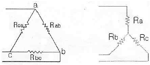
- Ra = 0.75, Rb = 1.25, Rc = 1.00
- Ra = 1.00, Rb = 1.67, Rc = 1.25
- Ra = 1.25, Rb = 1.67, Rc = 0.75
- Ra = 1.25, Rb = 1.67, Rc = 1.00
(정답률: 61%)
80. 공압계통에서 공기저장통 안에 설치되어 수분이나 윤활유가 계통으로 섞여 나가지 않도록 하는 것은?
- 핀
- 스택 파이프
- 배플
- 스탠드 파이프
(정답률: 67%)
이유는 깃의 면적이 작을수록 고속에서의 기동성은 떨어지지만, 반대로 깃의 면적이 크면 고속에서의 안정성은 높아집니다. 따라서 깃의 면적은 기동성과 안정성을 적절히 고려하여 결정해야 합니다.